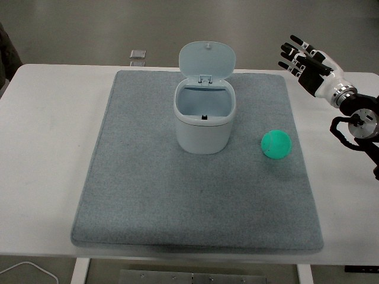

RoboMIND · tienkung_gello_1rgb__pick_up_tennis_ball_and_place_it_in_box/1212_105755
Pick up tennis ball and place it in box

Visual review action_review.json
{
"prompt_protocol": "humanoid_action_v1",
"prompt_protocol_note": "humanoid_action_v1 is applied by analogy to a non-Humanoid-Everyday/GR1 humanoid (Tien Kung with dexterous hands, single overhead camera_top stream).",
"prompt_provenance": "visually_authored_from_video_and_initial_frame",
"dataset": "x-humanoid-robomind/RoboMIND",
"task": "pick_up_tennis_ball_and_place_it_in_box",
"episode_id": "1212_105755",
"source_video": "../../original/data/trajectory.hdf5",
"generation_camera": "camera_top",
"source_frame_count": 543,
"source_resolution": [
640,
480
],
"source_fps": null,
"source_fps_note": "FPS is not recorded in the source HDF5; 30 FPS is only a nominal playback rate, so no real-time durations are claimed.",
"selected_source_frame_start": 0,
"selected_source_frame_end_exclusive": 543,
"selected_frame_count": 543,
"selection_reason": "The episode is one continuous single task (pick up the tennis ball, place it in the bin, withdraw); approach, grasp, lift, transport, release and withdrawal are ordinary phases of one action, so the complete sequence is kept and no shortened reference or separate full-sequence prompt is written.",
"usable_prompt": "The humanoid arm entering from the right side of the image reaches over the table, wraps its dexterous fingers around the green tennis ball, and lifts it. It carries the ball left above the small white bin with its lid open, lowers it inside, then opens its fingers to release the ball and withdraws to the right, leaving the ball in the bin. Keep the camera fixed; preserve robot geometry, physically valid joint motion, and normal gripper opening and closing.",
"full_sequence_prompt": "The humanoid arm entering from the right side of the image reaches over the table, wraps its dexterous fingers around the green tennis ball, and lifts it. It carries the ball left above the small white bin with its lid open, lowers it inside, then opens its fingers to release the ball and withdraws to the right, leaving the ball in the bin. Keep the camera fixed; preserve robot geometry, physically valid joint motion, and normal gripper opening and closing.",
"selected_action_outcome": {
"status": "visually_completed",
"description": "The right-entering hand closes around the green ball (about frames 120-240), lifts and carries it left (about 240-330) above the open-lid bin, lowers it into the bin (about 340-404), and opens to release it (about 404-420). The green ball is visible at the bottom of the bin from about frame 430 through frame 542 while the arm withdraws to near its start pose at the right edge. The ball resting inside the bin is directly visible."
},
"source_overall_outcome": {
"status": "visually_completed",
"source_quality_label": "success (archive member path is under success_episodes/train)",
"description": "Same as the selected action: the ball ends inside the small white bin and the hand is raised, open, at the right edge of the image."
},
"anatomical_side_evidence": {
"visible_description": "A single white-and-black dexterous humanoid hand and forearm enters the overhead view from the right image edge; the torso, shoulders and the second arm are never visible. Only the arm that enters from the right acts.",
"telemetry_evidence": "In puppet/joint_position (16 columns) only columns 8-15 change (std up to 0.4 rad; column 12 ranges about 1.22 rad, column 15 changes between about 0.62 and 0.92 consistent with hand closing); columns 0-7 are constant. This suggests the second 8-column block (columns 8-15) drives the acting arm and hand, which would correspond to the robot's right arm if the layout is left block then right block, but that ordering is an assumption not established from the video.",
"source_annotation": "original/task_prompt.txt: 'Pick up the tennis ball and place it in the box.'",
"visual_certainty": "Robot-relative left/right cannot be established from the overhead view because no body is visible. The prompt therefore uses the visible description 'arm entering from the right side of the image'."
},
"arm_roles": {
"active_visible_arm": "The arm entering from the right of the image reaches to the ball, closes its fingers around it, lifts and carries it to the bin, lowers it inside, opens its fingers to release, and withdraws.",
"other_arm": "Not visible and its telemetry columns (0-7) stay constant; it plays no role."
},
"coordination": "Single arm and hand act alone; no hand-to-hand transfer, no second-hand support and no human interaction.",
"chronology": [
{
"source_frames_inclusive": [
0,
36
],
"observation": "Hand and forearm held raised at the upper right with fingers spread; green ball on the mat at the right of the small white lidded bin (lid open); no motion of scene objects."
},
{
"source_frames_inclusive": [
38,
100
],
"observation": "Arm lowers and extends leftward across the table toward the ball, hand tilting palm-down with fingers extended (frames 48-100)."
},
{
"source_frames_inclusive": [
102,
128
],
"observation": "Fingertips reach the ball surface; the ball stays at its original position (native-resolution frame 130 shows a fingertip on the ball and the hand closing)."
},
{
"source_frames_inclusive": [
130,
238
],
"observation": "Fingers progressively curl around the ball with the thumb on one side and the fingers on the other; the ball remains on the mat until the hand begins to rise (about frame 240). Hand-scalar telemetry falls from about 0.92 to 0.66 between frames 180 and 210, consistent with the grasp closing."
},
{
"source_frames_inclusive": [
240,
330
],
"observation": "Ball is lifted off the mat inside the closed hand (frame 262 native resolution: ball held between thumb and fingers) and carried up and to the left toward the bin; at about frames 290-330 it is above the bin rim."
},
{
"source_frames_inclusive": [
332,
404
],
"observation": "Hand lowers the ball into the open bin mouth (frames 336-404), moving slightly in the bin throat; ball still held at frame 396-404."
},
{
"source_frames_inclusive": [
406,
430
],
"observation": "Fingers open (hand scalar rising toward 0.85-0.92) and the ball drops to the bottom of the bin; at frame 430 the open hand hovers above the bin with the ball at the bottom."
},
{
"source_frames_inclusive": [
432,
500
],
"observation": "Arm lifts the open hand out of the bin and withdraws up and to the right; ball remains visible at the bin bottom."
},
{
"source_frames_inclusive": [
502,
542
],
"observation": "Arm rests near the starting pose at the upper right edge with fingers open; ball in the bin; scene otherwise unchanged."
}
],
"uncertainties": [
"Robot-relative left/right arm identity is not established because no torso or second arm is visible; telemetry block ordering (columns 8-15 moving) only suggests the right arm.",
"The exact instant of release is a judgement between about frames 404 and 420 because the hand partly occludes the ball inside the bin.",
"The task name says 'box' but the container is a small white trash bin with a hinged lid held open; the prompt describes it as a small white bin with its lid open.",
"The grasp configuration (which fingers oppose the thumb) is only partly visible from above; the prompt says the fingers wrap around the ball.",
"FPS is not recorded in the source; frame indices are authoritative, not time.",
"Telemetry was used only as supporting evidence; the video determines the described outcome."
],
"source_annotation_discrepancies": [
"No discrepancy in objects or order. Publisher text says 'box' while the visible container is a small lidded white bin; the ball is called a tennis ball and appears as a green tennis-ball-like sphere."
],
"inspection_coverage": {
"entire_sequence_reviewed": true,
"sampled_decoded_frame_indices": [
0,
2,
4,
6,
8,
10,
12,
14,
16,
18,
20,
22,
24,
26,
28,
30,
32,
34,
36,
38,
40,
42,
44,
46,
48,
50,
52,
54,
56,
58,
60,
62,
64,
66,
68,
70,
72,
74,
76,
78,
80,
82,
84,
86,
88,
90,
92,
94,
96,
98,
100,
102,
104,
106,
108,
110,
112,
114,
116,
118,
120,
122,
124,
126,
128,
130,
132,
134,
136,
138,
140,
142,
144,
146,
148,
150,
152,
154,
156,
158,
160,
162,
164,
166,
168,
170,
172,
174,
176,
178,
180,
182,
184,
186,
188,
190,
192,
194,
196,
198,
200,
202,
204,
206,
208,
210,
212,
214,
216,
218,
220,
222,
224,
226,
228,
230,
232,
234,
236,
238,
240,
242,
244,
246,
248,
250,
252,
254,
256,
258,
260,
262,
264,
266,
268,
270,
272,
274,
276,
278,
280,
282,
284,
286,
288,
290,
292,
294,
296,
298,
300,
302,
304,
306,
308,
310,
312,
314,
316,
318,
320,
322,
324,
326,
328,
330,
332,
334,
336,
338,
340,
342,
344,
346,
348,
350,
352,
354,
356,
358,
360,
362,
364,
366,
368,
370,
372,
374,
376,
378,
380,
382,
384,
386,
388,
390,
392,
394,
396,
398,
400,
402,
404,
406,
408,
410,
412,
414,
416,
418,
420,
422,
424,
426,
428,
430,
432,
434,
436,
438,
440,
442,
444,
446,
448,
450,
452,
454,
456,
458,
460,
462,
464,
466,
468,
470,
472,
474,
476,
478,
480,
482,
484,
486,
488,
490,
492,
494,
496,
498,
500,
502,
504,
506,
508,
510,
512,
514,
516,
518,
520,
522,
524,
526,
528,
530,
532,
534,
536,
538,
540,
542
],
"sampling_method": "Every second decoded frame of camera_top (frames 0-542) in sequential 4x3 temporary contact sheets (480 px wide tiles), plus individually examined native-resolution frames 130, 262, 396, 404, 410 and 430.",
"native_resolution_frame_indices": [
130,
262,
396,
404,
410,
430
],
"conditioning_png_inspected_after_sequence": true,
"conditioning_png": "../first_frame.png",
"temporary_evidence_location": "/tmp/rm_review_tienkung_gello_1rgb__pick_up_tennis_ball_and_place_it_in_box_1212_105755 (removed after review; not a dataset artifact)",
"ancillary_camera_videos_used": false,
"telemetry_used": "puppet/joint_position columns sampled every 30 frames to see which block moves and how the hand scalar changes, as supporting evidence only."
},
"generation_reference_validation": {
"source_frame_start": 0,
"source_frame_end_exclusive": 543,
"frame_count": 543,
"lossless_source_frame_correspondence_passed": true,
"original_source_hdf5_retained_unchanged": true
}
}